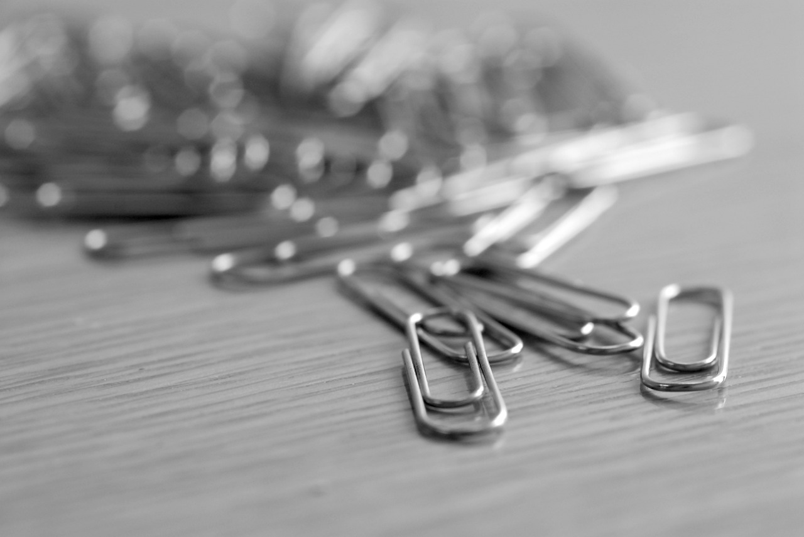

Tech Hacks
1. Smartphone Stand
Use a paperclip to create a makeshift stand for your smartphone while watching videos.
Watch this video to learn how to make a phone stand with paperclips:
- Step 1: Take a large paperclip.
- Step 2: Bend the paperclip to form a triangle with two legs and a base.
- Step 3: Adjust the angle and width of the base to ensure stability.
- Step 4: Place the smartphone in the triangular space created by the legs.
- Step 5: Adjust the smartphone to your preferred viewing angle.
- Step 6: Enjoy hands-free watching or video calls!
2. Keyboard Cleaning
Use a sticky note to clean your keyboard. The adhesive will pick up dirt and dust between the keys.

Watch this video to learn how to clean your keyboard with sticky notes:
- Step 1: Grab a sticky note or adhesive paper.
- Step 2: Fold the sticky note in half, exposing the adhesive side.
- Step 3: Slide the folded edge between the keys of your keyboard.
- Step 4: Gently press and lift the sticky note to catch dirt and debris.
- Step 5: Move the sticky note across the keyboard, ensuring all keys are cleaned.
- Step 6: Repeat as necessary until your keyboard is clean and debris-free.